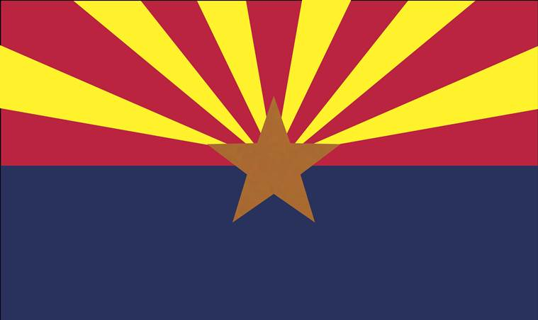

George Adams
About Me

My name is George Adams. I live in Tucson, Az with my wonderful wife and our whirling dervish of a son. I currently work in a Blood Plasma Lab where I use to be a manager before I stepped down to pursue my degree. In our spare time my family likes to play games, Dungeons & Dragons being a crowd favorite. Learning to code has been an absolute blast, and even my 8 year old is starting to explore coding! I hope to one day use these new skills to bless the lives of others however I can.
Tucson, Az

Tucson has a rich history and strong cultural diversity. It is the second-largest city in Arizona and is home to the University of Arizona. Tucson boasts 350 days of sunshine each year, making it the sunniest city in the United States. Take that, Florida! Tucson is also home to the Roadrunners Hockey Team! While their games are VERY fun to watch, I have never seen them win a game that I've attended. One day, though, one day.